Faixa gelada: neve azul, sem rachadura, e gelo que parece gelo
- Rocha pequena de gelo virou bloco de gelo (
rock_small_ice_0/1): mesma silhueta, mas o corpo inteiro agora é gelo, sem a pedra marrom. 3 propostas lado a lado (seção v1.1); a A (lapidado) está no pendente. - Minério e veio acompanham (
ore_ice,vein_ice,icon_ice,pickup_ice): o azul ficou um tom mais claro e translúcido, e as pepitas do minério e do veio perderam a faceta escura de baixo. Deixam de puxar pra safira e conversam com o bloco. - Resto da v1.0 (chão, decalques, rochas com neve, morros) aprovado, sem mudança.
- Chão (
ground_frost+ rampaBASE.frostnos 4 estágios): sai o cinza com rede de rachaduras, entra neve azul com dunas de vento compridas, campos de sastrugi (ondinhas do vento), manchinhas de gelo azul polido, grão e cintilado. Zero rachadura. - Decalques da faixa gelada: saem
icepoly(polígonos rachados),icesheet,rime(geada em pena, que lia como trinca) ewind. Entram 5 novos:snowbank(camada de neve fofa),sastrugi,glaze(gelo azul / poça de degelo),snowdrift(montinho) esparkle(cintilado). Mais chance de decalque = chão menos repetido. - Minério de gelo (
ore_ice,vein_ice,icon_ice,pickup_ice,rock_small_ice_0/1): mesma silhueta, pixel a pixel (conferido por script), agora lapidado: cada pedra é uma pirâmide de 4 facetas (cima clara, esquerda, direita, baixo escura) num azul saturado, com um ponto branco de brilho. Deixa de parecer prata. - Rochas com neve (referência nova do dono): pedra cinza-azulada com capa de neve em cima e escorrendo pelas bordas, nos 4 estágios, sem musgo nem verde. Entram no
decor_rimed_rock(refeito, mesmos tamanhos), numa laje grande nova (decor_snow_slabs), numa capa por cima das rochas pequenas (rock_small_snowcap) e nos morros da faixa gelada (só rampaHILL.frost).
Nada disso está em assets/ ainda: os arquivos finais estão em reports/design/v05_m3_gelo/pendentes/, prontos pra copiar. Gerado por tools/sprites/v05_m3_gelo.py (determinístico, md5 conferido rodando duas vezes) e este report por tools/sprites/v05_m3_gelo_report.py. As cenas são montadas só com os PNGs, na ordem de desenho do jogo.
v1.1 · Rocha pequena de gelo: bloco de gelo, não pedra com safira
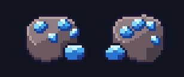
Mesma silhueta da rocha pequena (tampo + face de 6 px + pedrinha), conferida por script. O corpo inteiro agora é gelo: tampo azul-claro translúcido, face em faixas de azul cada vez mais fundo, borda de cima branca de brilho, luz refratada em risquinhos na face, bolhas presas e a pedrinha do lado como um cubo de gelo.
- A · lapidado (está no pendente): o tampo é cortado em 4 facetas a partir de um vértice, com aresta branca nas que pegam luz. É o que mais lê "cristal de gelo" e conversa com o minério.
- B · translúcido: tampo liso em 2 tons com o miolo azul fundo aparecendo por baixo e mais bolhas. Lê mais "gelo maciço" do que "cristal".
- C · com pedra presa: o B com um caquinho de pedra escura preso no miolo (o resquício de rocha, mas quem domina é o gelo).
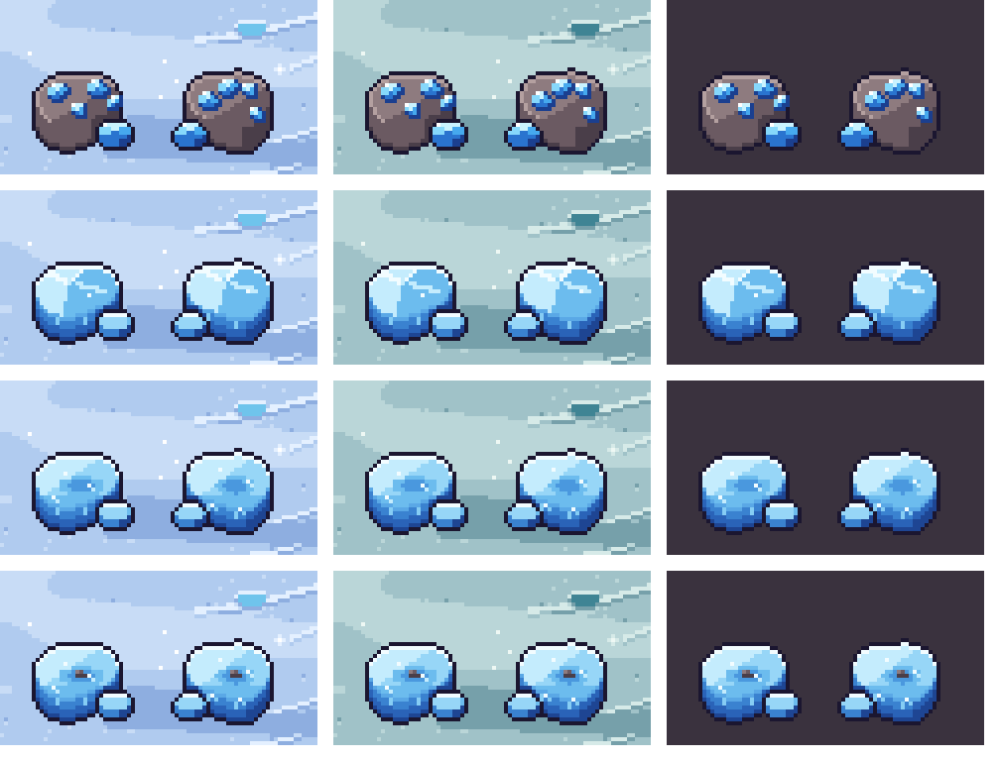
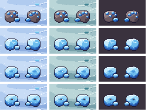
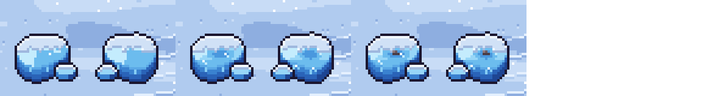
Pra trocar de proposta é uma linha no gerador: ROCK_STYLE = "A" em tools/sprites/v05_m3_gelo.py (B ou C), e roda de novo.
Minério e veio acompanhando (v1.0 × v1.1)
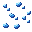
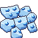
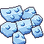
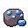
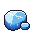
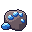
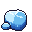
Cena · antes × depois nos 4 estágios (2×)
Mesma cena nos dois lados: chão + decalques sorteados como no jogo + veio 2×2 + morro com minério (gelo, ferro e silício) + rochas pequenas + soltos + o explorador pra escala. A cobertura do estágio (umidade da Névoa, grama do Verde) é a do jogo.
Tempestade
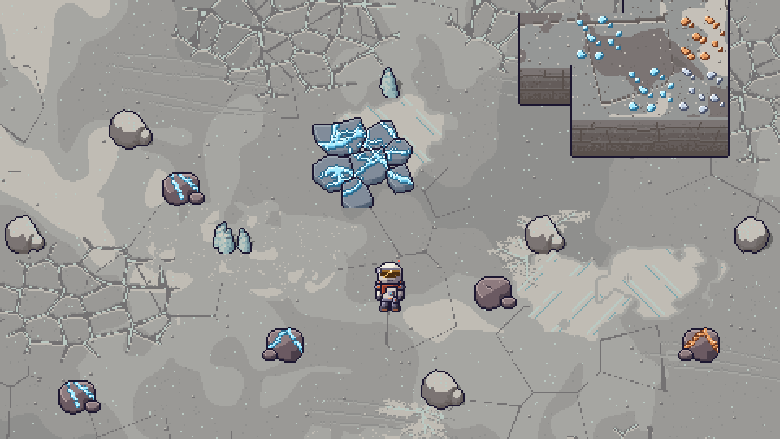
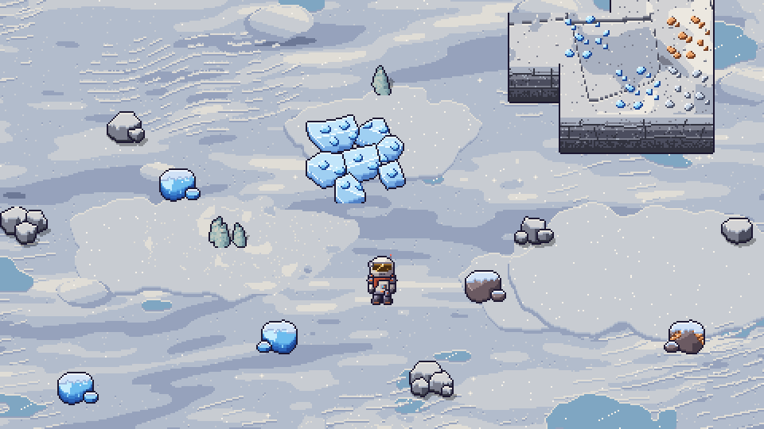

Árido
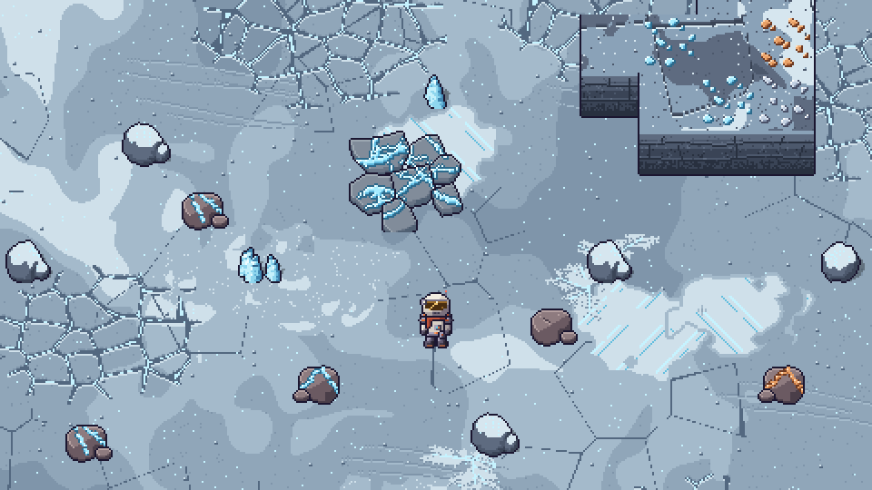
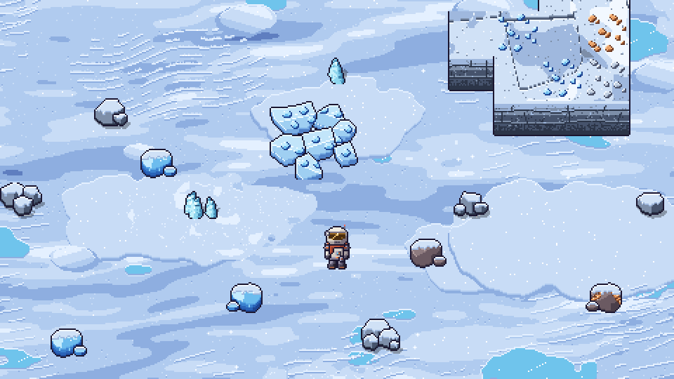

Névoa
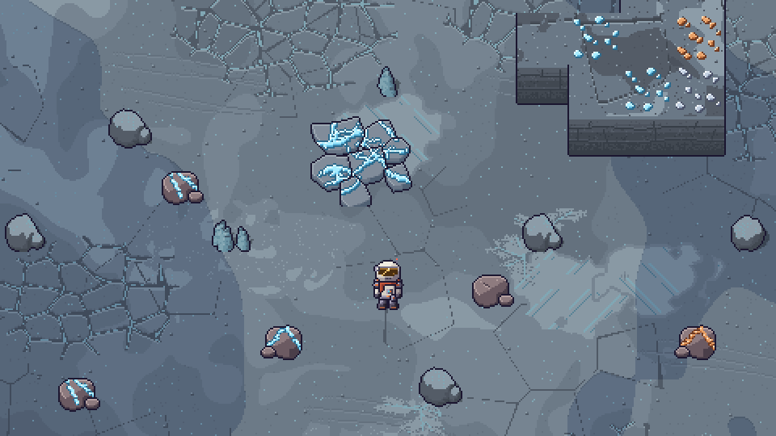
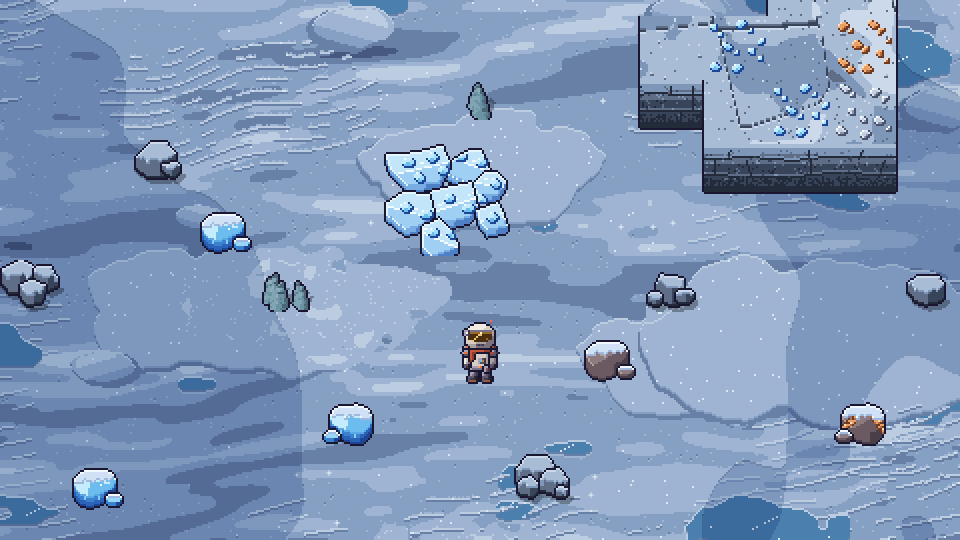

Verde
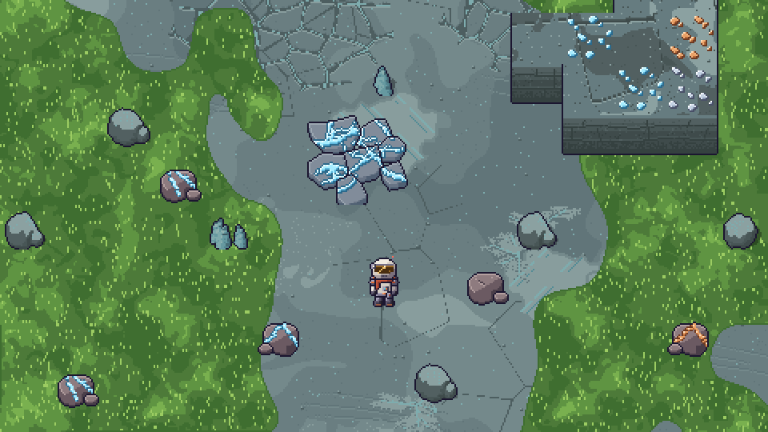
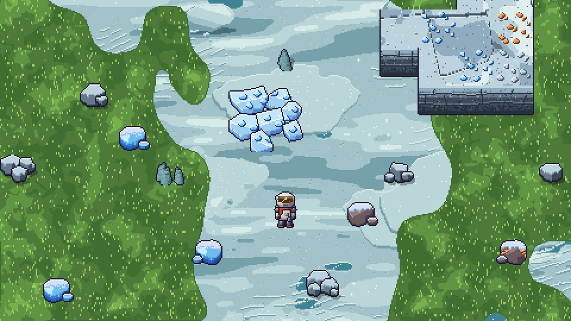

Escala real (1×)
O que cada estágio faz com a neve
- Árido: neve seca e fria, azul-neve de verdade; sombra azul saturada, gelo polido azul-turquesa, cintilado branco.
- Tempestade: a mesma neve com poeira ocre assentada (os claros amornam, a sombra continua azul). Não volta pro cinza chapado.
- Névoa: neve molhada, mais escura e fria; o gelo azul vira neve-papa escura. As manchas de umidade do jogo escurecem por cima e ficam com cara de neve encharcada.
- Verde: neve velha derretendo, verde-água pálido; o gelo azul vira poça de degelo. A grama do jogo brota por cima em manchas. As rochas continuam cinza-azuladas com neve (nada de musgo, como pedido).
| estágio | BASE.frost (chão e decalques) · 0..7 | HILL.frost (morro e rochas) · 0..7 |
|---|---|---|
| Tempestade | ||
| Árido | ||
| Névoa | ||
| Verde |
Chão · textura 512 nos 4 estágios
Recorte 256×256 do ground_frost.png, Tempestade · Árido · Névoa · Verde.
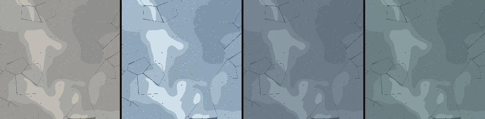
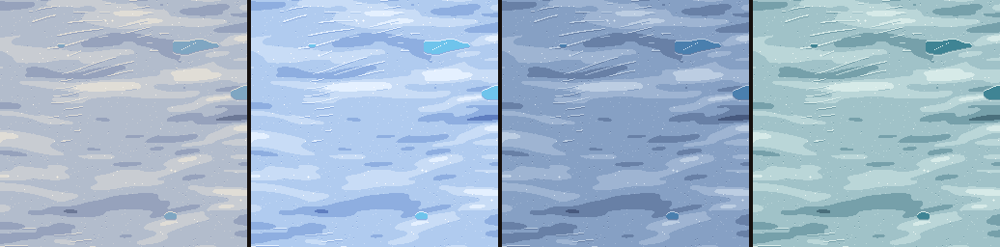
Repetição (a textura colada 2× lado a lado, emenda sem costura)
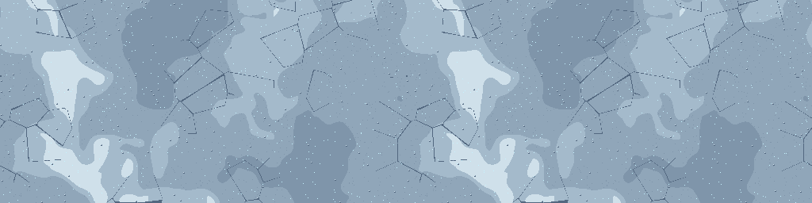
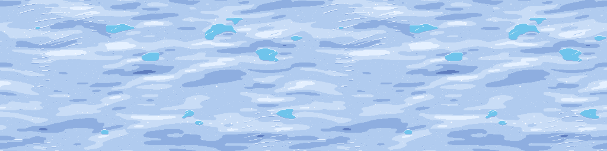
O que quebra a repetição: as dunas têm escala de 128 px e o campo de sastrugi e o gelo azul caem em lugares diferentes da textura; por cima, os decalques novos (até 196 px) sorteados pela célula de 96 px presa no mundo, com chance maior (v8 0,40 → 0,50; v9 0,30 → 0,45).
Decalques novos
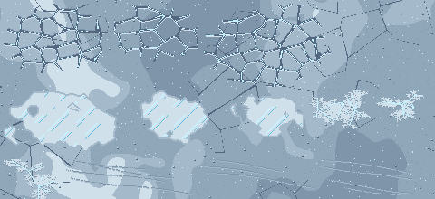
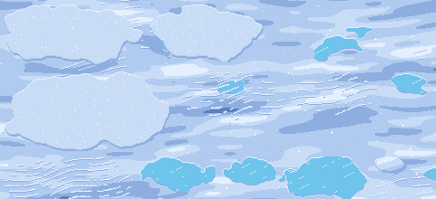
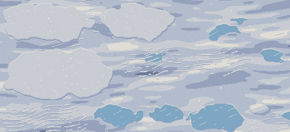
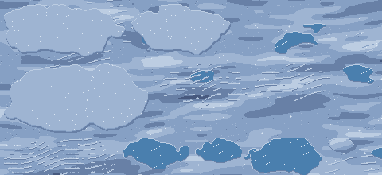
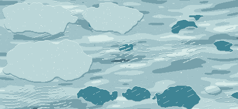
Minério de gelo · lapidado, mesma silhueta
Linha de cima = hoje, linha de baixo = proposta. Cada par: sobre o topo do morro da faixa gelada e sobre a rocha escura da caverna. Ferro e silício ficam iguais, só pra comparar a leitura: o gelo agora é o único azul saturado e facetado; o silício continua a lasca cinza-lilás.
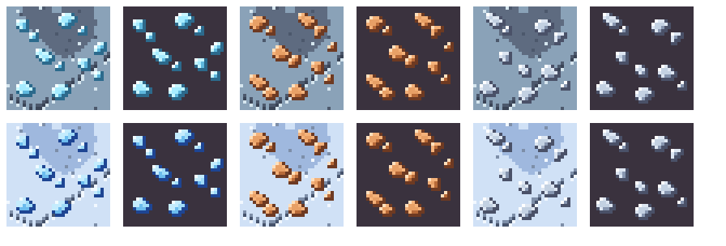
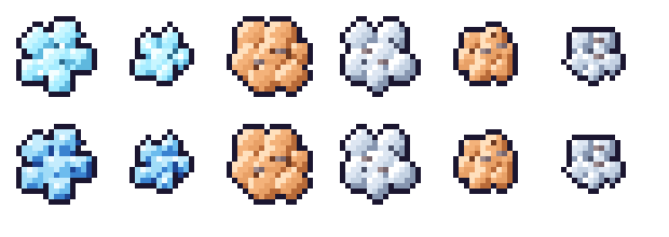
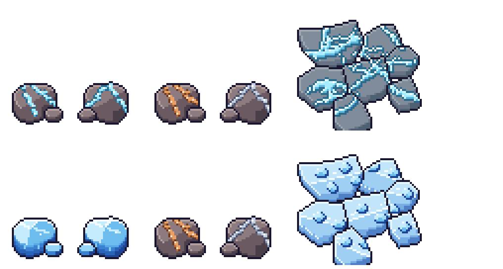
Arquivo por arquivo
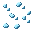


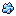

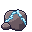
Rochas com neve (referência do dono)
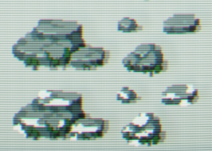
Do estilo da referência eu aproveitei: pedra cinza-azulada com contorno escuro, grupos de tamanhos variados (uma grande de várias lajes, médias e pequenas soltas), a capa branca grossa no topo com a borda de baixo irregular e neve escorrendo na borda de cima da face. As formas, a quantidade de lajes e o sombreamento são nossos (as lajes são polígonos sorteados por seed, no mesmo motor das placas do veio). Sem musgo e sem verde em nenhum estágio.
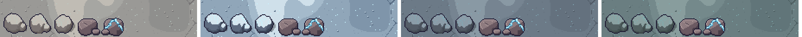
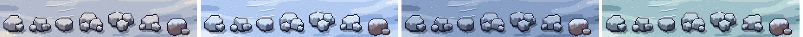
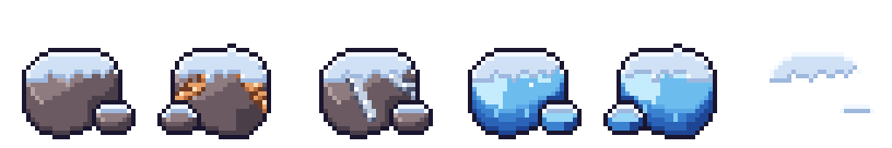
Morros da faixa gelada (só a rampa HILL.frost muda)
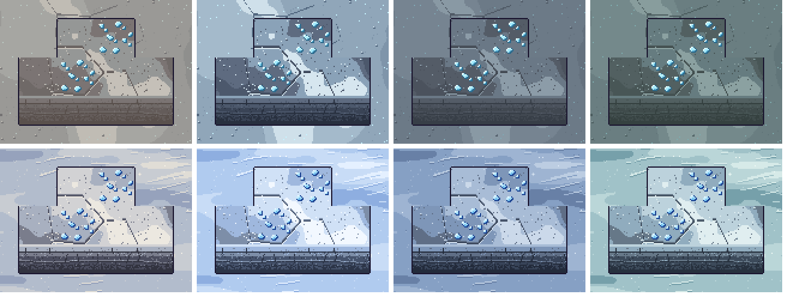
Pro Dev integrar
1. Copiar (depois do ok do dono)
reports/design/v05_m3_gelo/pendentes/regions/* → assets/sprites/regions/ (inclui o regions_palettes.json inteiro) e reports/design/v05_m3_gelo/pendentes/*.png → assets/sprites/.
| arquivo | tamanho | tipo | conferência |
|---|---|---|---|
icon_ice.png | 16×16 | substitui | mesmo tamanho |
ore_ice.png | 32×32 | substitui | mesmo tamanho |
pickup_ice.png | 16×16 | substitui | mesmo tamanho |
regions/decal_glaze_0.png | 85×42 | NOVO | novo |
regions/decal_glaze_1.png | 61×34 | NOVO | novo |
regions/decal_glaze_2.png | 94×50 | NOVO | novo |
regions/decal_sastrugi_0.png | 120×60 | NOVO | novo |
regions/decal_sastrugi_1.png | 96×50 | NOVO | novo |
regions/decal_sastrugi_2.png | 143×69 | NOVO | novo |
regions/decal_snowbank_0.png | 154×70 | NOVO | novo |
regions/decal_snowbank_1.png | 127×66 | NOVO | novo |
regions/decal_snowbank_2.png | 184×90 | NOVO | novo |
regions/decal_snowdrift_0.png | 38×21 | NOVO | novo |
regions/decal_snowdrift_1.png | 29×17 | NOVO | novo |
regions/decal_snowdrift_2.png | 46×27 | NOVO | novo |
regions/decal_sparkle_0.png | 25×17 | NOVO | novo |
regions/decal_sparkle_1.png | 20×18 | NOVO | novo |
regions/decal_sparkle_2.png | 26×15 | NOVO | novo |
regions/decal_sparkle_3.png | 17×8 | NOVO | novo |
regions/decor_rimed_rock_0.png | 27×25 | substitui | mesmo tamanho |
regions/decor_rimed_rock_1.png | 26×24 | substitui | mesmo tamanho |
regions/decor_rimed_rock_2.png | 24×23 | substitui | mesmo tamanho |
regions/decor_snow_slabs_0.png | 32×28 | NOVO | novo |
regions/decor_snow_slabs_1.png | 32×26 | NOVO | novo |
regions/decor_snow_slabs_2.png | 30×24 | NOVO | novo |
regions/ground_frost.png | 512×512 | substitui | mesmo tamanho |
regions/regions_palettes.json | — | substitui | JSON inteiro, com as mudanças abaixo |
rock_small_ice_0.png | 32×32 | substitui | mesmo tamanho |
rock_small_ice_1.png | 32×32 | substitui | mesmo tamanho |
rock_small_snowcap_0.png | 32×32 | NOVO | novo |
rock_small_snowcap_1.png | 32×32 | NOVO | novo |
vein_ice.png | 64×64 | substitui | mesmo tamanho |
Checagem: todos os substituídos têm o tamanho exato de hoje; ore/vein/icon/pickup/rock_small_ice com o alpha idêntico ao de hoje.
2. O que muda no JSON (já está no pendente; o código lê sozinho)
ramps.BASE.frosteramps.HILL.frost: as 4 rampas novas (tabela acima). O minimapa pega a cor média da BASE do Árido: a faixa gelada passa a pintar azul-neve.decal_mix.frost=[["snowbank", 4], ["sastrugi", 4], ["glaze", 2], ["patch_light", 2]],decal_p.frost= 0.5 (era 0,40). Saiicesheet,windegravel.v9_density.decal_mix.frost=[["snowdrift", 4], ["sparkle", 3]],v9_density.decal_p.frost= 0.45 (era 0,30). Saiicepolyerime.v9_density.decor_p.frost=[["penitentes", 0.01], ["rimed_rock", 0.01], ["snow_slabs", 0.006]](laje com neve nova; penitentes e rimed_rock um tico menos).files: entradas dos decalques novos (rampaBASE, regiãofrost) e dosdecor_snow_slabs_*(rampaHILL, regiãofrost).- Os decalques e soltos são carregados por glob (
decal_*.png,decor_*.png), então os nomes novos entram sem código. Os antigos (decal_icepoly_*,decal_icesheet_*,decal_rime_*) podem ficar emassets/: saem do sorteio porque não estão mais em nenhuma mistura.
3. Código (o mínimo)
- Capa de neve nas rochas pequenas (único trecho novo): na superfície, quando o tile de uma rocha pequena (
rock_smallerock_small_{iron,silicon,ice}_{0,1}) está na regiãofrost, desenharrock_small_snowcap_{v}.png(32×32, RGBA) logo depois da rocha, no mesmo (x, y).v= a variação da rocha (rock_variant(tx, ty)); arock_small.pngcomum usa a 0 (mesma silhueta). A capa fica dentro da silhueta, não mexe em colisão. Na caverna, não desenha. A magmatita não usa (nasce no basalto). - Sugestão (config, opcional):
GROUND_GRASS_THRda classe gelada de 0,48 → ~0,62, pra no Verde a faixa continuar lendo como neve derretendo, com grama em manchas, e não como gramado (nas cenas do Verde dá pra ver os 0,48 de hoje). - Ordem de desenho, âncoras e tamanhos: nada muda. Chão e decalques no assado do chão;
vein_iceno mesmo lugar;ore_icepor cima do topo do morro em (x, y − 24);decor_snow_slabs_*como os outros soltos (âncora no centro da base, ordem pelo pé, não colide, até 32×28).
Fora do escopo, mas vi
- O silício perde contraste em cima do morro com neve (cinza-claro sobre branco-azulado). Não mexi (não era o pedido); se incomodar no jogo, dá pra escurecer o socket dele.
decor_ice_chunksestá pausado noSCENERY_PAUSED; não mexi. Os gelos-portão, a cratera e as agulhas usam a rampaICE, que não muda.